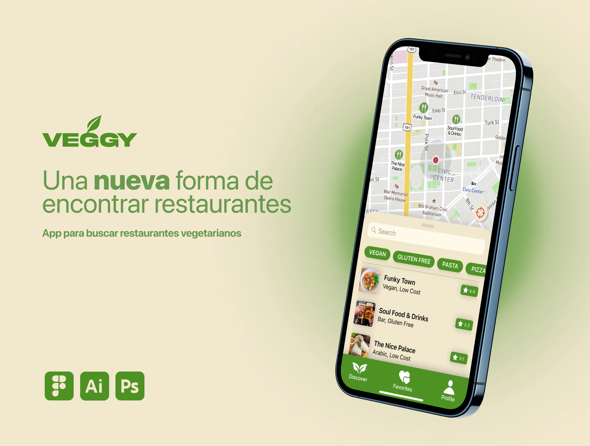
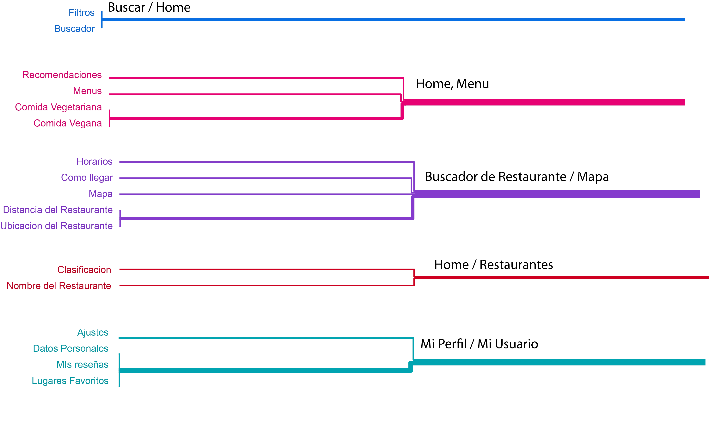

A comprehensive UX/UI case study for a mobile app that helps users discover local restaurants
with vegan options, making plant-based dining accessible and enjoyable.
RoleUX/UI Designer & Researcher
Timeline2023
ToolsFigma, User Research
MobileFoodResearch

01. Strategy
What We Know (The Context)
A significant increase in the vegetarian population has been observed, which is reflected in the inclusion of more vegetarian options on restaurant menus.
The Problem
Not all of this food is of good quality. Sometimes, menu options are added simply to comply with demand, allowing restaurants to claim they offer "veggie" options on platforms like Google Maps or Tripadvisor.
Furthermore, the reviews and ratings for these places are often written by people who do not normally consume vegetarian food. This makes it considerably difficult to find restaurants that truly offer high-quality vegetarian and vegan dishes.
The Objective
To allow people to more easily find vegetarian restaurants and options in their area, while simultaneously enabling them to obtain reliable information about these places.
Our Solution
Use geolocation to show the user the closest vegetarian-friendly places and guarantee that the reviews are written by members of the veggie community.
This way, we can provide reliable and precise information about establishments with vegetarian and vegan options in the user's area.
01. Estrategia
Lo Que Sabemos (El Contexto)
Se ha observado un aumento significativo en la población vegetariana, lo que se refleja en la inclusión de más opciones vegetarianas en los menús de los restaurantes.
El Problema
No toda esta comida es de buena calidad. A veces, las opciones del menú se agregan simplemente para cumplir con la demanda, lo que permite a los restaurantes afirmar que ofrecen opciones "veggie" en plataformas como Google Maps o Tripadvisor.
Además, las reseñas y calificaciones de estos lugares suelen ser escritas por personas que normalmente no consumen comida vegetariana. Esto hace que sea considerablemente difícil encontrar restaurantes que realmente ofrezcan platos vegetarianos y veganos de alta calidad.
El Objetivo
Permitir que las personas encuentren más fácilmente restaurantes y opciones vegetarianas en su área, y al mismo tiempo permitirles obtener información confiable sobre estos lugares.
Nuestra Solución
Usar geolocalización para mostrar al usuario los lugares aptos para vegetarianos más cercanos y garantizar que las reseñas sean escritas por miembros de la comunidad veggie.
De esta manera, podemos brindar información confiable y precisa sobre los establecimientos con opciones vegetarianas y veganas en la zona del usuario.
02. User Research
User Persona: Nadia
26 years old, Programmer User Type: Wants to find new restaurants.
"I work a lot from home, so I enjoy going out to eat with my partner. However, we've noticed that we generally end up going to the same restaurants, because when we try new places, we find that the vegan offer on their menus is usually limited and not very varied."
Biography
Nadia is a programmer who enjoys going out to eat to break her routine after spending long hours at home. She would love to discover new places with her partner, but bad past experiences (with limited and low-quality vegan options) prevent them from doing so.
Objectives & Goals
• Discover new flavors and foods
• Be able to go out of the house more
• Find new places to go with her partner
Motivations
• Discover new flavors
• Have good moments with her partner
Frustrations
• She rarely finds info about specific vegan dishes
• She doesn't trust reviews from non-vegan users
• She is afraid of taking her partner to a bad-quality restaurant
02. Investigación de Usuarios
Persona de Usuario: Nadia
26 años, Programadora Tipo de Usuario: Quiere encontrar nuevos restaurantes.
"Trabajo mucho desde casa, así que disfruto salir a comer con mi pareja. Sin embargo, hemos notado que generalmente terminamos yendo a los mismos restaurantes, porque cuando probamos lugares nuevos, descubrimos que la oferta vegana en sus menús suele ser limitada y poco variada."
Biografía
Nadia es una programadora que disfruta de salir a comer para romper con su rutina después de pasar largas horas en casa. Le encantaría descubrir lugares nuevos con su pareja, pero malas experiencias previas (con opciones veganas limitadas y de baja calidad) evitan que lo hagan.
Objetivos y Metas
• Descubrir nuevos sabores y comidas
• Poder salir más de casa
• Encontrar lugares nuevos para ir con su pareja
Motivaciones
• Descubrir nuevos sabores
• Pasar buenos momentos con su pareja
Frustraciones
• Rara vez encuentra información sobre platos veganos específicos
• No confía en reseñas de usuarios no veganos
• Tiene miedo de llevar a su pareja a un restaurante de mala calidad
03. Scope: MVP Functionalities
To address Nadia's needs, we defined the core functionalities for the Minimum Viable Product (MVP).
Find Restaurants
• Users must find veggie-friendly restaurants as soon as they open the app
• Show the closest places based on geolocation
• Display locations on a map with a list view below
Search Restaurants
• A search bar for specific culinary specialties (e.g., Mexican, Chinese, Japanese) or specific dishes (e.g., empanadas, sushi, pizza)
Read Reviews
• Users must be able to read reviews written by other veggie users
• Access to reviews from verified vegetarian and vegan users
• See star ratings for the restaurant and individual dishes
• Identify if a specific dish in a review is vegan or vegetarian
• Vote on the usefulness of a review
Write Reviews
• Users must be able to review a place, a dish, and their experience
• Ability to rate with stars
• Specify if the dish consumed was vegetarian or vegan
• Upload photos of the place, menu, or dishes
03. Alcance: Funcionalidades MVP
Para abordar las necesidades de Nadia, definimos las funcionalidades principales para el Producto Mínimo Viable (MVP).
Encontrar Restaurantes
• Los usuarios deben encontrar restaurantes aptos para vegetarianos apenas abran la aplicación
• Mostrar los lugares más cercanos basados en geolocalización
• Mostrar ubicaciones en un mapa con una vista de lista debajo
Buscar Restaurantes
• Barra de búsqueda para especialidades culinarias en particular (ej. Mexicana, China, Japonesa) o platos específicos (ej. empanadas, sushi, pizza)
Leer Reseñas
• Los usuarios deben poder leer reseñas escritas por otros usuarios veggie
• Acceso a reseñas de usuarios vegetarianos y veganos verificados
• Ver la calificación en estrellas del restaurante y platos individuales
• Identificar si un plato específico en una reseña es vegano o vegetariano
• Votar sobre la utilidad de una reseña
Escribir Reseñas
• Los usuarios deben poder reseñar un lugar, un plato y su experiencia
• Posibilidad de calificar con estrellas
• Especificar si el plato consumido fue vegetariano o vegano
• Subir fotos del lugar, menú o platos
04. Structure
User Research: Dendrogram
To understand how users group information, we used a dendrogram. This revealed five main categories of user agreement:
• Search / Home: (Filters, Search)
• Home / Menu: (Recommendations, Menus, Vegetarian/Vegan Food)
• Restaurant Search / Map: (Hours, How to get there, Map, Distance)
• Home / Restaurants: (Rating, Restaurant Name)
• My Profile / My User: (Settings, Personal Data, My Reviews, Favorites)

Information Architecture
Based on the dendrogram, we created the sitemap:
🏠 Home
├── 🔍 Explore
├─ Recommendations
├── Filters
└── New Places
├── 🔎 Search
├── ⭐ Favorites
├── 👤 My Profile
├── Settings
├── Personal Data
├── My Reviews
└── Favorite Places
└── 🗺️ Map
├── Restaurant Info
└── Restaurant List
User Flow
We mapped out Nadia's primary path: finding a new restaurant, checking its reliability, and then having the option to contribute back to the community.
Flow: Open App → Log In → Enter "Explore" → Choose a recommended restaurant → Check reviews (from other veggie users) → Go to the restaurant → Write a review
04. Estructura
Investigación de Usuarios: Dendrograma
Para entender cómo los usuarios agrupan la información, usamos un dendrograma. Esto reveló cinco categorías principales de acuerdo entre los usuarios:
• Inicio / Restaurantes: (Calificación, Nombre del Restaurante)
• Mi Perfil / Mi Usuario: (Ajustes, Datos Personales, Mis Reseñas, Favoritos)
Arquitectura de la Información
Basados en el dendrograma, creamos el mapa del sitio:
🏠 Inicio
├── 🔍 Explorar
├─ Recomendaciones
├── Filtros
└── Sitios Nuevos
├── 🔎 Buscar
├── ⭐ Favoritos
├── 👤 Mi Perfil
├── Ajustes
├── Datos Personales
├── Mis Reseñas
└── Lugares Favoritos
└── 🗺️ Mapa
├── Info del Restaurante
└── Lista de Restaurantes
Flujo del Usuario
Mapeamos el camino principal de Nadia: encontrar un nuevo restaurante, verificar su confiabilidad y luego tener la opción de contribuir a la comunidad.
Flujo: Abrir App → Iniciar Sesión → Entrar a "Explorar" → Elegir un restaurante recomendado → Ver reseñas (de otros usuarios veggie) → Ir al restaurante → Escribir una reseña
05. Skeleton (Wireframes)
We translated the app's structure into visual layouts, iterating from low to high fidelity.
Manual (Hand-drawn) Wireframes
Initial sketches of the five core screens: Home, Explore, Restaurant, Directions, and Write Review.
Low-Fidelity Wireframes
Digital versions of the hand-drawn sketches, establishing the basic layout and component placement.
05. Esqueleto (Wireframes)
Tradujimos la estructura de la aplicación en diseños visuales, iterando desde baja hasta alta fidelidad.
Wireframes Manuales (Dibujados a Mano)
Bocetos iniciales de las cinco pantallas principales: Inicio, Explorar, Restaurante, Cómo llegar y Escribir Reseña.
Wireframes de Baja Fidelidad
Versiones digitales de los bocetos a mano, estableciendo la estructura básica y la ubicación de los componentes.
06. Surface (Fidelity)
Medium-Fidelity
At this stage, we applied standard design patterns, added grayscale images, and implemented the icon set to create a functional (but unstyled) version of the app.
High-Fidelity
We applied the final UI Kit, including color, typography, and polished components, to create the final look and feel of the application.
06. Superficie (Fidelidad)
Fidelidad Media
En esta etapa, aplicamos patrones de diseño estándar, agregamos imágenes en escala de grises e implementamos los íconos para crear una versión funcional (pero sin estilos) de la aplicación.
Alta Fidelidad
Aplicamos el Kit de UI final, incluyendo color, tipografía y componentes pulidos, para crear el aspecto final de la aplicación.
07. Validation
Usability Testing
It was time to evaluate the design with real users.
Methodology
Users were given the medium-fidelity prototype to test.
Objectives
To analyze the user's paths, identify inconsistencies, and discover any difficulties in the flow.
Key Questions
• Were you able to find what you were looking for?
• Did you have any difficulty?
• How simple was it to use the app?
• How simple was it to find a restaurant?
Satisfaction Metrics & Results
The results from the usability test were mixed, providing clear insights for a second iteration.
95% of users found it simple to find a restaurant. (This shows the core user flow was successful.)
However, only 65% found what they were looking for, and only 65% found the app easy to use.
35% of users experienced some difficulty during the test.
07. Validación
Pruebas de Usabilidad
Era hora de evaluar el diseño con usuarios reales.
Metodología
Se le dio a los usuarios el prototipo de fidelidad media para probar.
Objetivos
Analizar el recorrido del usuario, identificar inconsistencias y descubrir cualquier dificultad en el flujo.
Preguntas Clave
• ¿Pudiste encontrar lo que buscabas?
• ¿Tuviste alguna dificultad?
• ¿Qué tan simple fue usar la aplicación?
• ¿Qué tan simple fue encontrar un restaurante?
Métricas de Satisfacción y Resultados
Los resultados de la prueba de usabilidad fueron mixtos, proporcionando información clara para una segunda iteración.
El 95% de los usuarios encontró fácil hallar un restaurante. (Esto muestra que el flujo de usuario principal fue un éxito).
Sin embargo, solo el 65% encontró lo que buscaba y solo al 65% le pareció fácil usar la app.
El 35% de los usuarios experimentó alguna dificultad durante la prueba.
08. Conclusion & Next Steps
The usability testing confirmed that we successfully solved the main user problem: finding a restaurant is simple and effective (95% success). This validates our core architecture and the "Explore" and "Map" functionalities.
However, the mixed results (65% ease of use, 35% difficulty) indicate that while the main flow is strong, the secondary features and overall navigation are not as intuitive.
Next Steps
Our next steps will be to iterate on the medium-fidelity prototype, focusing specifically on clarifying the information architecture of the "My Profile" section and improving the discoverability of the "Search" and "Filter" functions.
08. Conclusión y Próximos Pasos
Las pruebas de usabilidad confirmaron que logramos resolver el problema principal del usuario: encontrar un restaurante es simple y efectivo (95% de éxito). Esto valida nuestra arquitectura principal y las funcionalidades de "Explorar" y "Mapa".
Sin embargo, los resultados mixtos (65% en facilidad de uso, 35% experimentó dificultad) indican que, si bien el flujo principal es sólido, las funciones secundarias y la navegación general no son tan intuitivas.
Próximos Pasos
Nuestros próximos pasos serán iterar sobre el prototipo de fidelidad media, centrándonos específicamente en aclarar la arquitectura de la información de la sección "Mi Perfil" y mejorar la visibilidad de las funciones "Buscar" y "Filtro".
09. Final Change
Based on the user feedback during testing, the following changes were applied:
Add animations: The options were not entirely intuitive. I plan to add animations at the start of the app to explain its correct use.
More restaurant information: Users 1, 2, and 5 highlighted the lack of addresses and phone numbers for the restaurants.
Filters for reviews: User 4 said she wanted an option to filter reviews.
Report problems: User 1 asked, "What happens if the information is incorrect?" To cover this, I added the option to report errors.
Alternative direction options: A common question was, "Are the directions for driving or walking?" Based on this, I added the option to choose between driving or walking directions.
UI Corrections: Some UI details were not clear, such as how to exit reviews and go back between screens.
09. Cambios Finales
Basado en la retroalimentación de los usuarios durante la prueba, se aplicaron los siguientes cambios:
Agregar animaciones: Las opciones no eran del todo intuitivas. Planeo agregar animaciones al iniciar la app para explicar su uso correcto.
Más información del restaurante: Los usuarios 1, 2 y 5 destacaron la falta de direcciones y números de teléfono.
Filtros para reseñas: El usuario 4 dijo que quería una opción para filtrar reseñas.
Reportar problemas: El usuario 1 preguntó: "¿Qué pasa si la información es incorrecta?". Para cubrir esto, agregué la opción de reportar errores.
Opciones alternativas para llegar: Una pregunta común fue: "¿Las indicaciones son para ir en auto o caminando?". Basado en esto, agregué la opción de elegir indicaciones.
Correcciones de interfaz: Algunos detalles no estaban claros, como cómo salir de las reseñas y retroceder entre pantallas.
10. Final Results (Second Test)
After implementing the changes from the first round of feedback, a second round of usability testing was conducted.
The results showed a significant improvement in the app's overall usability. The number of users who experienced any difficulty during the test decreased from 35% to 15%. This confirms that the iterative changes directly addressed the main points of friction.
Conclusion
The initial research correctly identified a clear market need, and the first prototype successfully validated our core hypothesis: users found it 95% simple to find a restaurant.
However, the initial usability tests showed that a functional core isn't enough; the app was held back by unclear navigation and missing key features, leading to 35% of users experiencing difficulty. By listening to user feedback and iterating on the design — adding features like review filters, error reporting, and clearer UI cues — we were able to reduce user friction by over 50% in the second round of testing.
The project demonstrates the value of iterative design: moving from a prototype that works to a final design that is intuitive, reliable, and user-friendly.
10. Resultados Finales (Segunda Prueba)
Después de implementar los cambios, se realizó una segunda ronda de pruebas de usabilidad.
Los resultados mostraron una mejora significativa en la usabilidad general de la aplicación. El número de usuarios que experimentaron alguna dificultad durante la prueba disminuyó del 35% al 15%. Esto confirma que los cambios iterativos abordaron directamente los principales puntos de fricción.
Conclusión
La investigación inicial identificó correctamente una clara necesidad en el mercado, y el primer prototipo validó nuestra hipótesis central: al 95% de los usuarios le pareció simple encontrar un restaurante.
Sin embargo, las pruebas iniciales mostraron que un núcleo funcional no es suficiente. Al escuchar a los usuarios e iterar sobre el diseño (agregando funciones como filtros de reseñas, reporte de errores y señales de interfaz más claras), logramos reducir la fricción en más del 50%.
Este proyecto demuestra el valor del diseño iterativo: pasar de un prototipo que funciona a un diseño final que sea intuitivo, confiable y amigable.